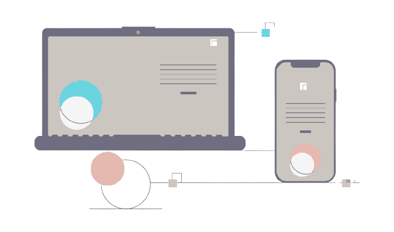

Mon parcours
Je suis en reconversion professionnelle et à la recherche d’une alternance dans le domaine du développement web.
Ce nouveau métier associe le plaisirs de concevoir des maquettes de part mon ancien métier de diététicienne (brochures, livrets, affiches pour mes patients) et mon intérêt pour les nouvelles technologies.
Je m’épanoui dans ma formation et souhaite mettre mon enthousiasme, mon dynamisme et ma bonne humeur au service d’une entreprise qui me correspond.
